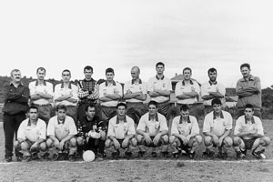

Povijest kluba

Zlatna luka, Sukošan, 1996.
Nogometni športski klub Zlatna luka osnovan je 1932. godine u Sukošanu. Klub je započeo kao skromni lokalni tim, no tijekom godina je izrastao u istaknuti simbol nogometne tradicije regije.
Jedan od najuzbudljivijih događaja sezone je derbi protiv NK Bibinja, poznat kao "El Clasico". Ovo dugogodišnje rivalstvo donosi strast i uzbuđenje na terenu, okupljajući navijače iz cijele regije. Susreti između Zlatne luke i NK Bibinja su nezaboravni događaji koje ne smijete propustiti!
Kroz svoju bogatu povijest, klub je prošao kroz mnoge izazove i uspone. Od skromnih početaka na improviziranim igralištima do izgradnje vlastitog terena na Dešenju, Zlatna luka je uvijek bila sinonim za strast prema nogometu i zajedništvo.
Nakon Drugog svjetskog rata, klub je obnovio svoje djelovanje i ponovno postao središte sportske aktivnosti u Sukošanu. Kroz godine, Zlatna luka je postigla mnoge uspjehe na terenu, ali i aktivno sudjelovala u lokalnoj zajednici kroz razne humanitarne akcije i društvene događaje.